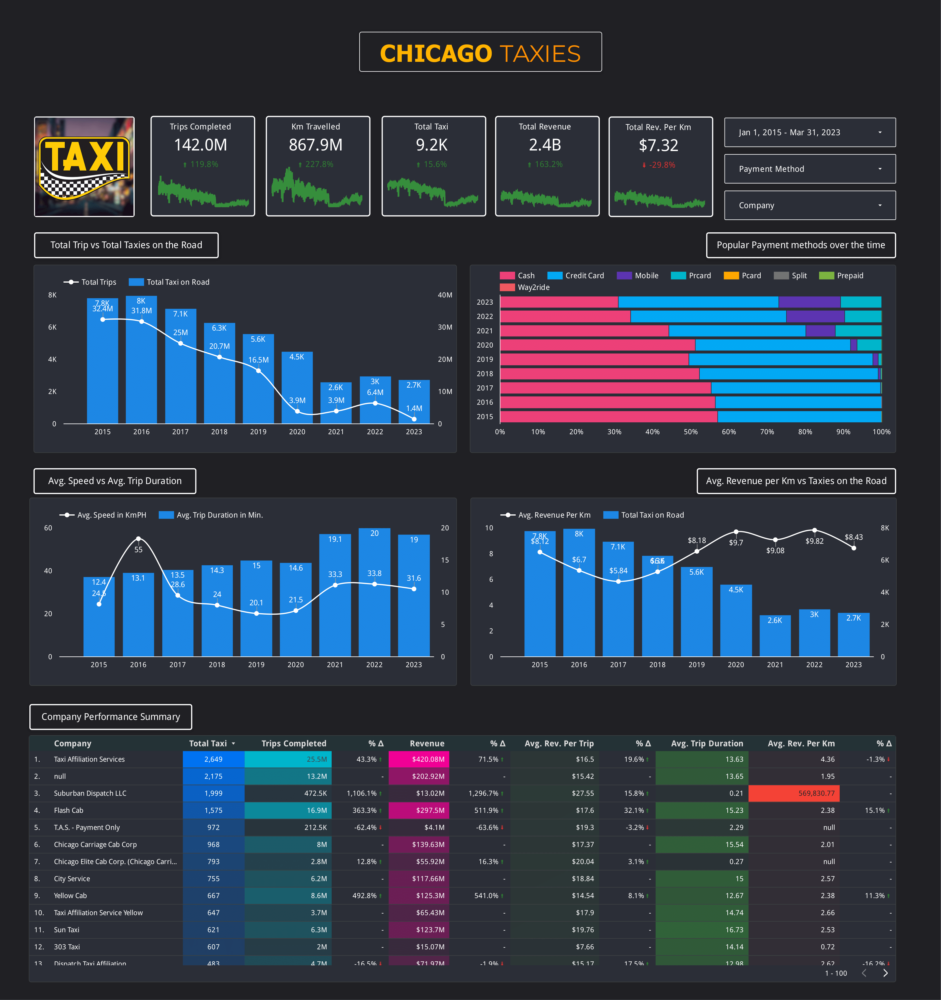
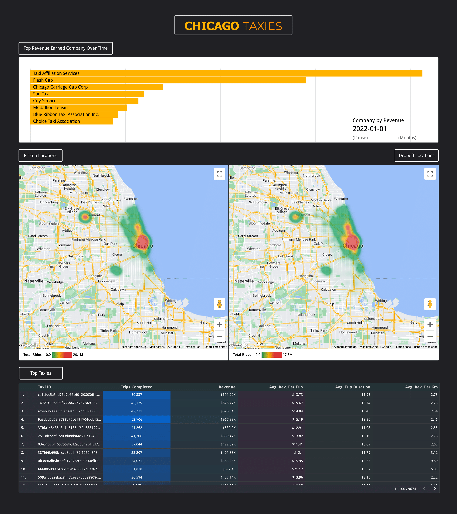

This Data Studio (formerly Looker Studio) dashboard explores the City of Chicago's public taxi dataset in BigQuery for January 2015 to March 2023: 142.0M trips, 9.2K taxis and $2.4B in revenue. Yearly trips fall from 32.4M in 2015 to 3.9M in 2020 and 2021, with a partial rebound to 6.4M in 2022, while demand stays concentrated downtown and along the lakefront.


bigquery-public-data.chicago_taxi_trips.taxi_trips, from the City of Chicago's "Taxi Trips (2013-2023)" datasetThis started as an exploration of the City of Chicago's open taxi dataset in BigQuery. The question that shaped the dashboard: how has Chicago's taxi market changed between 2015 and 2023, and where do trips and revenue concentrate? Each chart answers one part of it: market size, payment habits, trip length, company share and geography.
The City of Chicago publishes taxi trips reported to it as a regulatory agency. Each row is one trip, with start and end times, seconds and miles travelled, pickup and dropoff locations, fare, tips, tolls, extras, total, payment type and company. The BigQuery copy holds 213,111,447 rows, about 83 GB, from January 2013 to December 2023 (counted on October 10, 2026).
That is a lot of data for an interactive report, so I limited the window to 2015 onward to keep the volume manageable. The dashboard reads from a custom SQL query in BigQuery connected to Data Studio. Page one has KPI tiles for trips, km travelled, taxis, revenue and revenue per km, filters for date, payment method and company, four yearly charts and a company table. Page two has a company revenue race, pickup and dropoff heatmaps and a table of individual taxis.
In 2015 there were 7.8K taxis on the road and 32.4M trips, and 2016 was close behind with 8K taxis and 31.8M trips. Then trips fell every year: 25M in 2017, 20.7M in 2018 and 16.5M in 2019, when 5.6K taxis were running. That is about half the 2015 volume before 2020 began.
In 2020 trips dropped to 3.9M and stayed at 3.9M in 2021, with taxis at 2.6K. 2022 recovered partly, to 6.4M trips and 3K taxis. The 2023 bar of 1.4M trips and 2.7K taxis covers January to March only, because of the date filter, so it is not a further collapse.
Cash is the largest slice of the payment mix in 2015, at roughly 57%, and it shrinks every year to about 31% in 2023. Credit card takes most of the difference and is the biggest share by 2023. Mobile payments are a thin sliver in 2019 and 2020 and by 2022 and 2023 make up roughly a sixth of the mix.
Average trip duration rises from 12.4 minutes in 2015 to 15 in 2019, then to 19.1 in 2021, 20 in 2022 and 19 in 2023. Average speed was 24.5 km/h in 2015 and 20.1 in 2019, then 33.3 in 2021 and 33.8 in 2022. Since trips after 2020 are both longer in time and faster, the average ride covers more distance than in 2015. Revenue per km fell from $8.12 in 2015 to $5.84 in 2017 and climbed to $9.82 in 2022.
Among the top rows of the company table, Taxi Affiliation Services leads on trips and revenue: 2,649 taxis, 25.5M trips (about 18% of the 142.0M) and $420.08M. Flash Cab follows with 1,575 taxis, 16.9M trips and $297.5M. Chicago Carriage Cab Corp ($139.63M), Yellow Cab ($125.3M), Sun Taxi ($123.7M) and City Service ($117.66M) sit in a band between $117M and $140M. In the January 2022 frame of the revenue race on page two, Taxi Affiliation Services has the longest bar, followed by Flash Cab and Chicago Carriage Cab Corp.
The pickup and dropoff heatmaps look alike. Both peak downtown and along the lakefront strip to the north, and the scales top out at 20.1M pickups and 17.3M dropoffs. A second, separate hotspot sits to the northwest around O'Hare International Airport, next to Rosemont, and it is stronger for pickups than for dropoffs. Smaller patches appear south-west of downtown, and the suburbs show little activity.
In the dashboard, trips run from 32.4M in 2015 and 31.8M in 2016 down to 25M in 2017, 20.7M in 2018 and 16.5M in 2019. They were 3.9M in both 2020 and 2021 and 6.4M in 2022. The 1.4M shown for 2023 is January to March only.
Trips fell from 16.5M in 2019 to 3.9M in 2020, a drop of about three quarters, and stayed at 3.9M in 2021 before reaching 6.4M in 2022. Taxis on the road went from 5.6K in 2019 to 4.5K in 2020 and 2.6K in 2021. Trips had already been falling since 2015, so 2020 is a steep drop on top of a long decline.
For January 2015 to March 2023, Taxi Affiliation Services leads the dashboard's company table with $420.08M from 25.5M trips, ahead of Flash Cab at $297.5M from 16.9M trips. Trips with no company recorded add another $202.92M that cannot be assigned to a company.